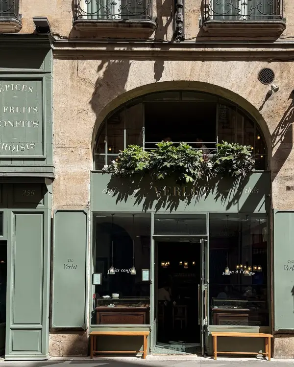
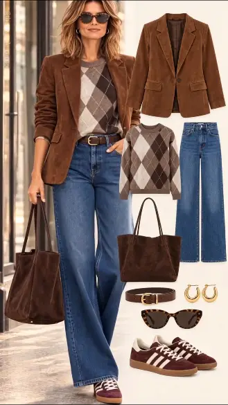

Магазин
Пред да почне работната недела — пет навики што ќе ви помогнат да седите помалку на работа
Имате ли неколку минути за прошетка по ручекот?

Париското кафуле „Верле“: приказна за кафето што трае од 1880 година
Дел од нив и денес го чуваат духот на некогашниот град, а меѓу нив е и „Кафе Верле“ , историска куќа за кафе и чај на улицата Сент Оноре , недалеку од градините на Пале Ројал и ...
ТРИ ЗНАЦИ ВЛЕГУВААТ ВО СПЕЦИЈАЛЕН ПЕРИОД ДО 22 НОЕМВРИ: Сè се движи во вистинската насока
Хороскопските препораки и совети не треба да се сфаќаат особено сериозно, а за сите индикации и нуспојави обратете се на стручњак… Богатството и среќата ќе ги следат три хороско...
Кирија или кредит за стан од 60 м² во Скопје – што навистина е поисплатливо?
евра со месечна кирија од 400 евра носи 4. евра годишна бруто-кирија.
Швајцарско село им нуди до 70.000 франци на семејствата за да ги задржи жителите
Можност за финансиска поддршка од дури 70. швајцарски франци нуди малата општина Албинен во Швајцарија за семејствата кои сакаат да купат или….

Широките фармерки можат да додадат килограми ако ги комбинирате погрешно: Стилистите открија 5 начини да изгледате стилски
Можете да носите широки фармерки на работа, на прошетка или на вечерно излегување.
ВНУКОТ НА ДУЛЕ ЈА ИСПЕА „ВИОЛИНА И ГИТАРА“ ЗАЕДНО СО КОКИ НА ЕМОТИВНИОТ КОНЦЕРТ ПО ПОВОД 30 ГОДИНИ ОД МАКФЕСТОВСКИОТ ХИТ
Внукот на пејачот Душан Љубисављевиќ-Дуле го испеа хитот „Виолина и гитара“ заедно со виолинистот Никола Јанков-Коки на емотивниот концерт во […].
Кој е Боби од песната што Фиби Бриџерс ја испеа во „Saturday Night Live“?
Според наводите, „Bobby“ е инспирирана од нејзината врска со момчето Бо Барнам.
ШТО СÈ СЕ КРИЕ ВО ПЛАКАРОТ НА МАМА? Ќерката на Кетрин Зита-Џонс пронајде модно богатство старо 30 години!
Кога мајка ти е една од најубавите и најстилски холивудски актерки, очигледно нема потреба постојано.
„Code 369“ и „Паркети“ ја претставија македонската верзија на „Ме сакаш ли?“
Со македонската верзија на „Ме сакаш ли?“, Code 369 и „Паркети“ ја продолжуваат заедничката музичка приказна, претставувајќи ја композицијата во ново јазично руво и отворајќи ја...